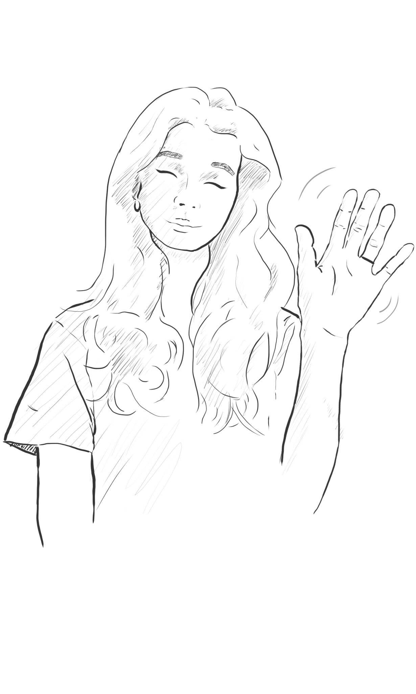

Vítej poutníku! Co tě sem přivádí?
Ztratil jsi tkaničky? To je vskutku nemilé... Nechápu, jak se ti to povedlo.
Naštěstí mám jasnozřivé schopnosti a můžu ti povědět, kde tkaničky jsou!
Abych ti to ale řekla, musíš nejprve vyřešit řadu šifer a úkolů.
Každá zastávka na tvé cestě má svou vlastní stránku na tomto webu. V hlavičce každé stránky nalezneš pořadové číslo a název zastávky. Třeba nyní se nacházíme na stránce číslo 0 s názvem Intro. Chytáš se zatím?
Fajn. Pod hlavičkou obvykle najdeš úkol. Řešením úkolu je vždy slovo nebo krátká fráze. Aby ses z úkolu N dostal na úkol N+1, uprav URL na .../tkanicky/{N+1}/{odpoved}
Pochopitelně odpověď zadávej bez diakritiky a případné mezery nahraď podtržítky.
Huh. No dobře, tak si to vyzkoušej sám. Odpověď pro tuto zastávku je slovo šifra.
Hodně štěstí a hlavně si to užij :)